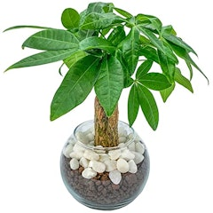
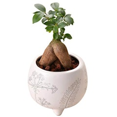
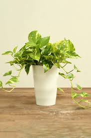
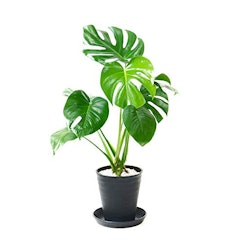
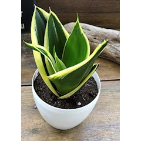
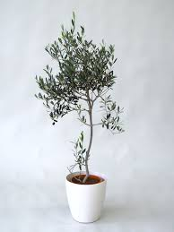

パキラ

おしゃれな飾り方
耐陰性に優れ、冬場の温度に気をつけていれば室内でもすくすくと育ち、お手入れの手間もあまりかかりません。
ガジュマル

おしゃれな飾り方
金運 光沢のある丸い葉が密集する植物が金運アップに良いとされており、縁起の良い効果も持っています。
ポトス

おしゃれな飾り方
「自己活性化」や「恋愛運アップ」という効果があるといわれています。また、丸い葉はリラックス効果があります。
モンステラ

おしゃれな飾り方
大きくなるにつれて乾燥にも適応し、耐陰性にも強く、比較的暗い場所でも育ち、室内での生育には最適です。
サンスベリア

おしゃれな飾り方
場を浄化してよい気で満たすことで悪い気を寄せ付けない、「魔除け」や「邪気払い」の効果もあります。
オリーブ

おしゃれな飾り方
一年を通して緑の葉を楽しむことができる常緑樹です。鉢植えで家の中に置くことも出来ますし、庭があれば屋外で育てることも可能です。